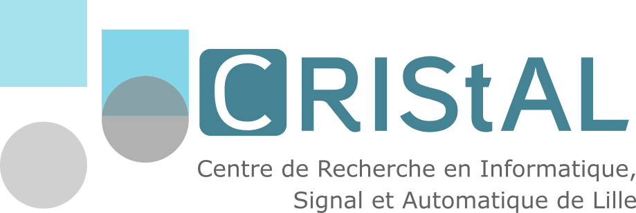
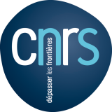

Participating institutions



An international, transcontinental and multidisciplinary research consortium advancing the foundations of Sequential Science.


SEQUO-IA studies scientific experimentation as a sequential learning and decision-making process.
Classical experimental designs typically specify the experiments in advance. SEQUO-IA investigates approaches in which each observation informs the design of the next experiment, allowing experimental strategies to adapt continuously to uncertainty, constraints and accumulated evidence.
A common mathematical and computational language for adaptive experimentation across disciplines.
Statistical inference, uncertainty quantification, sequential statistics and learning theory provide principled representations of what is known, and what remains uncertain.
Bandits, reinforcement learning, active learning, Bayesian optimization and sequential decision methods determine which experiment should be performed next.
Mathematical guarantees, statistical validity, robustness, safety and sample efficiency are essential when adaptive decisions interact with costly or safety-critical experiments.
The same principles can support adaptive experimentation across laboratory, field and real-world scientific systems.
Sequentially selecting experiments to identify and optimize biological functions.
Learning experimental configurations while accounting for physical constraints and uncertainty.
Sequential allocation and experimental design under statistical and ethical constraints.
Scaling adaptive experimentation from controlled trials to heterogeneous agricultural systems.
Sequential decision-making for scientific exploration and interaction with complex environments.
Adaptive experimental interventions driven by observations from biological systems.
Sequential experimentation and decision-making for ecological systems.
Closing the loop between hypotheses, experiments, observations and subsequent scientific decisions.